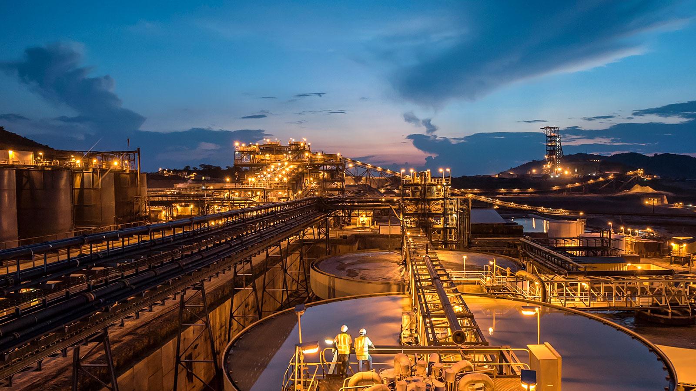
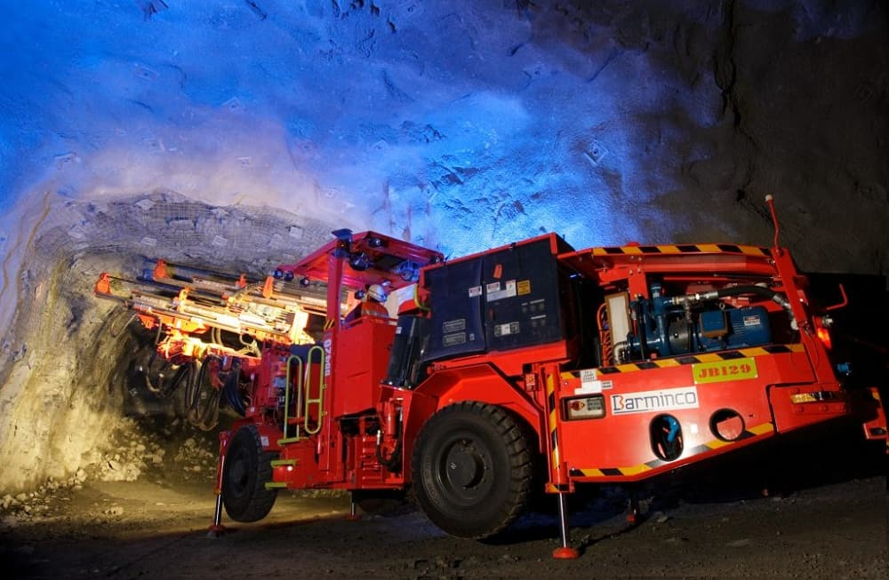
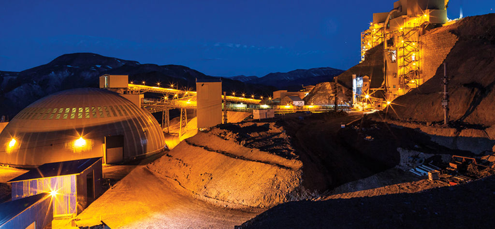
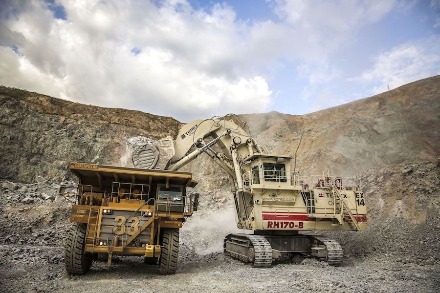

Barrick has gold and copper mining operations and projects in 13 countries in North and South America, Africa, Papua New Guinea and Saudi Arabia. Barrick's diversified portfolio spans many of the world’s prolific gold districts and is focused on high-margin, long-life assets.
Featured sustainable mine sites:
Kibali
The Kibali gold mine is located in the northeast of the Democratic Republic of Congo (DRC), approximately 220 kilometres east of the capital of the Haut Uele province, Isiro.
Hemlo
Hemlo has produced more than 21 million ounces of gold, and has been operating continuously for more than 30 years.
Veladero
The Veladero mine is located in San Juan Province, Argentina, in the highly prospective Frontera District.
North Mara
The North Mara production started in 2002 and the process plant has the capacity to process an average of 8,000 tonnes of ore per day.
Recent sustainable news
- Barrick Gold Corporation (NYSE:GOLD)(TSX:ABX) has retained its listing in the prestigious Dow Jones Sustainability Index’s (DJSI) World Index, ranking in the 95th percentile of all mining companies assessed. Barrick scored full marks (100th percentile) in the categories of environmental reporting, water-related risks, social reporting and human rights, and improved its scores in policy influence, operational eco-efficiency, biodiversity and occupational health and safety. News Release Source
- Barrick Gold Corporation (NYSE:GOLD)(TSX:ABX) today welcomed the launch of the Global Industry Standard on Tailings Management, developed through a year-and-a-half long review process involving the United Nations Environment Programme (UNEP), Principles for Responsible Investment (PRI) and the International Council on Mining and Minerals (ICMM). News Release Source
- Barrick Gold Corporation (NYSE:GOLD)(TSX:ABX) (“Barrick”) continues to strengthen its reputation as a trusted partner in its host countries across the world and is actively working to build a more sustainable mining sector fit to attract the next generation of industry leaders, says President and Chief Executive Mark Bristow in the company’s 2019 Sustainability Report published today. Bristow says Barrick’s commitment to social and economic development, health and safety, human rights and the environment is a key component of its business strategy. “As a modern mining company, we recognize that we must be a trusted long-term partner for our stakeholders to be sustainable, and that we must be sustainable to be successful,” he says. News Release Source